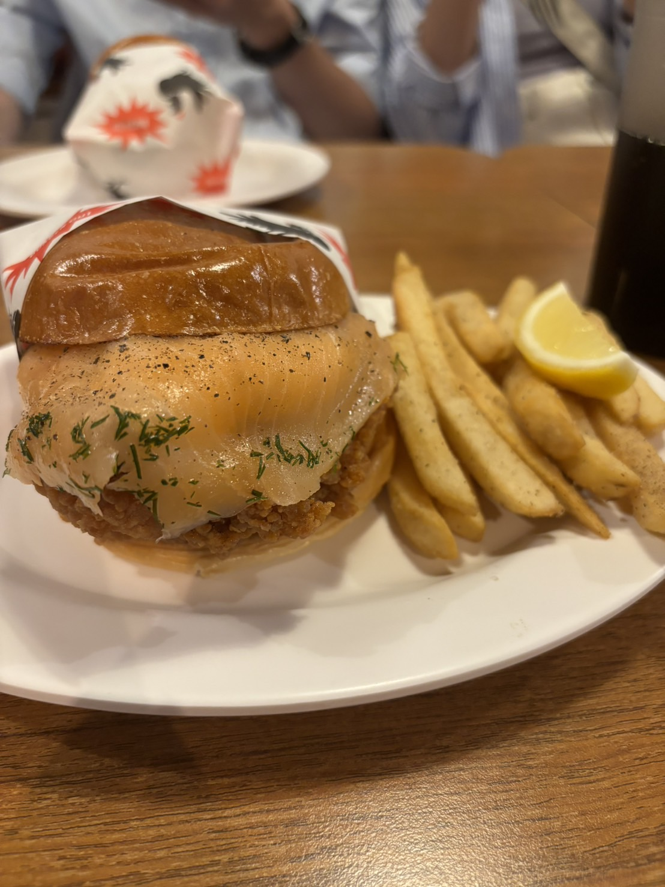

以炸雞為主的漢堡店，店面小小一間，當天是假日去有稍微排隊。漢堡是現點現做，所以上餐的時間會稍微等久一點。
雖然Burger Out的漢堡口味沒有很多，但是絕對會被他的炸雞驚艷！炸雞外皮酥脆，但不會刮嘴巴，對於我這種喜歡大口吃漢堡的人，一口下去超滿足～
當天點的是日式山葵美乃滋，原本很擔心山葵的味道會不會很嗆，蓋過整體味道，沒想到口味意外溫和，而且搭配上生菜，完美中和炸雞的油膩感，吃完整個漢堡還是覺得很清爽。對於女生或是不想吃太重口味的朋友來說超推！！
朋友點的是煙燻鮭魚，一口下去煙燻鮭魚的香氣和炸雞同時出現，卻完全不違和，兩者香氣與口感相輔相成。吃到中間味覺疲乏時，可以擠上店家附的檸檬，會感覺檸檬激發出煙燻鮭魚的所有潛力，所有味道又會重新再次出現在你的嘴裡，也是非常值得嘗試的品項！
不過小小難過的是，沒有單獨賣漢堡裡的這種炸雞排，只有雞翅雞腿等，期待之後老闆可以上架！
*薯條與飲料需要另外加套餐，自己覺得可加可不加，薯條是蠻傳統的那種胡椒味（外面鹹酥雞店會吃到的調味方式）